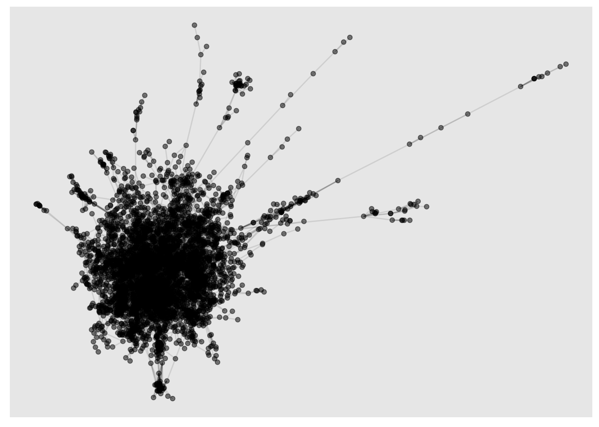
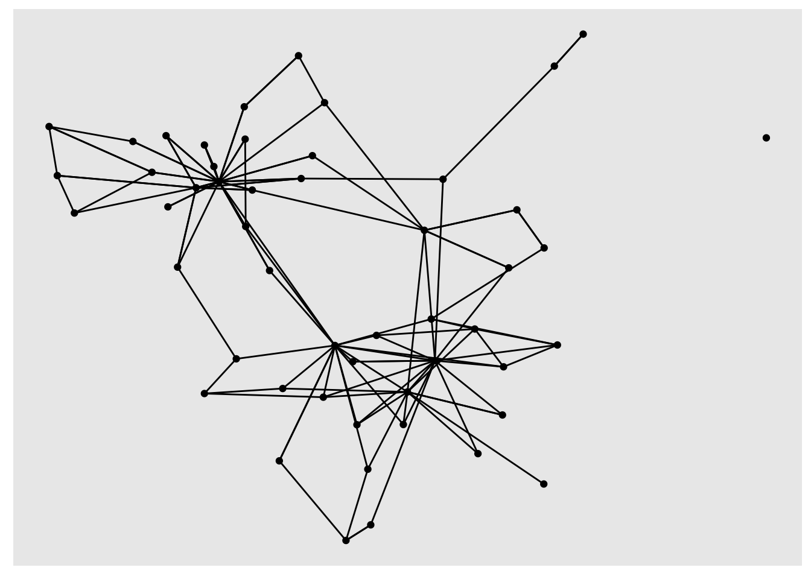
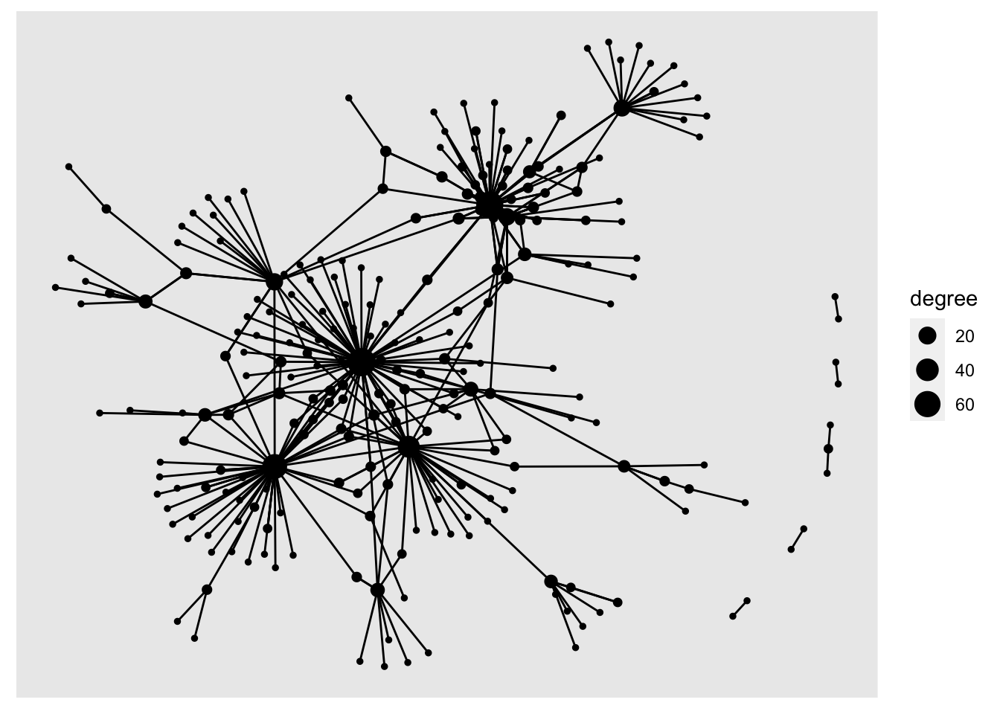
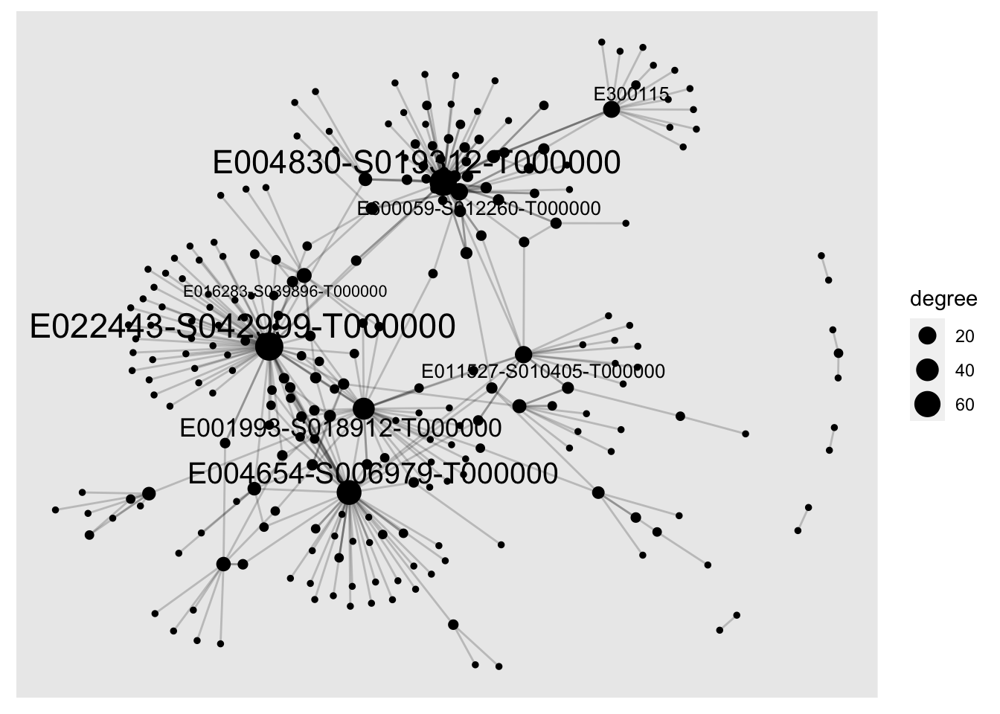
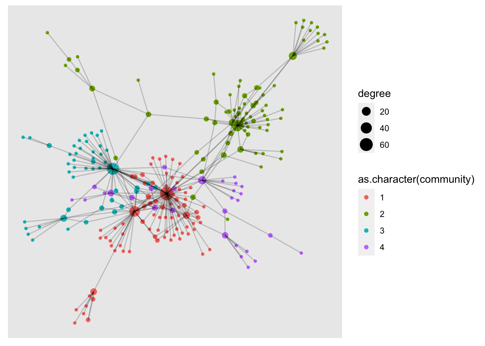
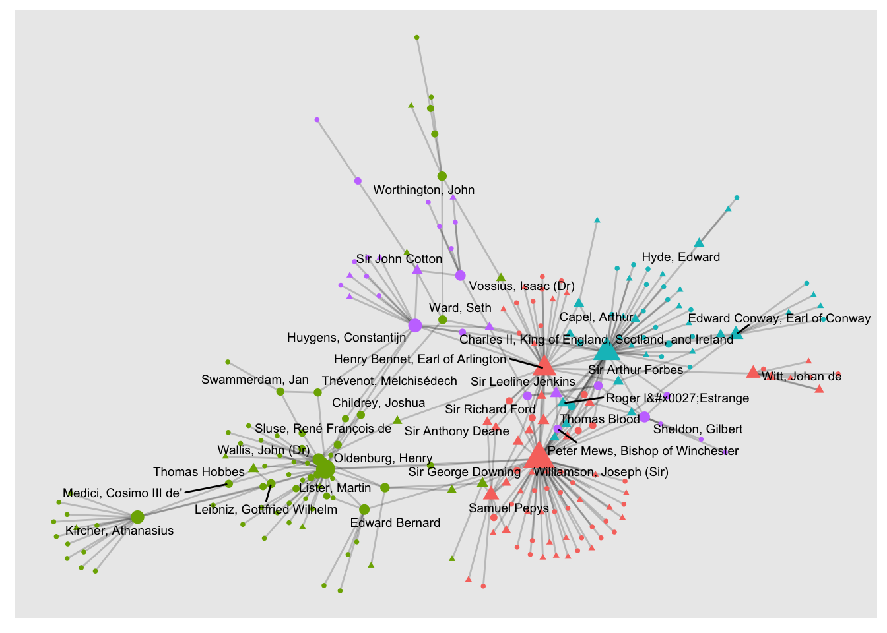

Week 5, Class 1: Visualising Networks with ggraph
Network visualisations.
Perhaps because of the complexity of many network datasets, it is very common for them to be visualised. These visualisations are most often the points and lines which we have used throughout this book, but there are also a number of other ways they can be visualised (which often might be more useful).
From early social network research, researchers tried to manually visualise these graphs in meaningful ways, for example by placing closely-connected clusters together (and away from other clusters), placing important or highly-connected nodes towards the centre, or minimising the number of edge (line) crossings. With large networks, today this process is usually carried out using algorithms to work out the node placements.
Force-directed network visualisations
The most common family of these algorithsm are ‘force-directed’, meaning they use a simulation of physical forces in order to create sensible placements of nodes. One of the most common of these is the Fruchterman-Reingold layout, which treats edges like a spring. Nodes which share an edge are attracted to each other using a spring-like force; every pair of nodes in the system also has a repulsive force. The algorithm simulates this physical system and stops when the distances between the nodes means that the system is in equilibrium.
Visualisation with ggraph
The next step in the workflow is visualising the network. We will use a package called ggraph, which uses the same language as ggplot (used in the earlier lesson) and adds some special functions to visualise networks.
To create a network diagram, first use the function ggraph on your tbl_graph, then add the special ggraph geoms geom_node_point() and geom_edge_link()
library(tidygraph)
library(tidyverse)
library(ggraph)
letters = read_csv("letter_data.csv", col_types = cols(.default = "c"))
edge_list = letters %>%
group_by(from_id, to_id) %>%
tally(name = 'weight')
sample_tbl_graph = edge_list %>%
as_tbl_graph()
sample_tbl_graph## # A tbl_graph: 248 nodes and 364 edges
## #
## # A directed simple graph with 6 components
## #
## # Node Data: 248 × 1 (active)
## name
## <chr>
## 1 E000145-S012650-T000000
## 2 E000189-S014115-T000000
## 3 E000312-S012741-T000000
## 4 E000393-S036175-T000000
## 5 E000520-S001769-T000000
## 6 E000799-S042396-T000000
## # … with 242 more rows
## #
## # Edge Data: 364 × 3
## from to weight
## <int> <int> <int>
## 1 1 89 1
## 2 2 22 4
## 3 2 199 1
## # … with 361 more rowssample_tbl_graph %>% ggraph('fr') + geom_node_point() + geom_edge_link()
Ggraph and other tidyverse functions
You can use the dplyr pipes to perform calculations, filter the data and then visualise it, all in one go:
sample_tbl_graph %>%
activate(nodes)%>%
mutate(degree = centrality_degree(mode = 'total')) %>%
filter(degree >2) %>%
ggraph('nicely') +
geom_node_point() +
geom_edge_link()
Adding aesthetics such as color and size
geom_node_point() and geom_edge_link take aesthetics, just like regular ggplot geoms. You can calculate degree scores and then set the size of the nodes to the result:
sample_tbl_graph %>%
activate(nodes)%>%
mutate(degree = centrality_degree(mode = 'total')) %>%
ggraph('nicely') +
geom_node_point(aes(size = degree)) +
geom_edge_link()
Add node labels
Add geom_node_text() to add text labels to your network. In a larger network, it can be helpful to only show labels belonging to the most-connected nodes. First, join the people table to the nodes table, then use ggraph, setting the label aesthetic. Another dplyr verb, if_else allows you to add conditions to the label command. Here, I’ve used if_else to return the label if the node’s degree score is more than 10:
A the moment, we only have the IDs for each node. In a further step we can join back the actual names and use these as labels.
sample_tbl_graph %>%
activate(nodes) %>%
mutate(degree = centrality_degree(mode = 'total')) %>%
ggraph('nicely') +
geom_node_point(aes(size = degree)) +
geom_node_text(aes(label = if_else(degree >10, name, NULL), size = degree), repel = TRUE) +
geom_edge_link(alpha = .2)## Warning: Removed 240 rows containing missing values (geom_text_repel).
Calculating and coloring by community detection
One very common visualisation is colouring the various groups in the network, which might give us a clue as to its structure.
sample_tbl_graph %>%
as.undirected() %>%
as_tbl_graph() %>%
activate(nodes) %>%
mutate(degree = centrality_degree(mode = 'total')) %>%
mutate(community = group_edge_betweenness(weights =NULL)) %>%
filter(community %in% 1:4) %>%
ggraph('nicely') +
geom_node_point(aes(size = degree, color = as.character(community))) +
geom_edge_link(alpha = .2)## Warning in cluster_edge_betweenness(graph = .G(), weights = weights, directed =
## directed): At core/community/edge_betweenness.c:485 : Membership vector will be
## selected based on the lowest modularity score.## Warning in cluster_edge_betweenness(graph = .G(), weights = weights, directed
## = directed): At core/community/edge_betweenness.c:492 : Modularity calculation
## with weighted edge betweenness community detection might not make sense --
## modularity treats edge weights as similarities while edge betwenness treats them
## as distances.
Case study: Scientists and Politicians
By joining the node attribute information to the network, we can use this external information in the visualisations.
First, load the same node attributes table as before:
node_attributes = read_csv('node_attributes.csv')## Rows: 248 Columns: 13
## ── Column specification ────────────────────────────────────────────────────────
## Delimiter: ","
## chr (11): name, main_name, all_names, links, gender, roles_titles, wikidata_...
## dbl (2): birth_year, death_year
##
## ℹ Use `spec()` to retrieve the full column specification for this data.
## ℹ Specify the column types or set `show_col_types = FALSE` to quiet this message.This external information might help us to make sense of the clusters found by the community detection algorithm used above. One of the fields in the data is whether that person is listed as a politician on Wikidata:the field can be either yes or no.
To check whether this might be a clue towards the structure of the network, we will set the color to the community, and the shape to the politician flag.
sample_tbl_graph %>%
as.undirected() %>%
as_tbl_graph()%>%
activate(nodes) %>%
mutate(degree = centrality_degree(mode = 'total')) %>%
left_join(node_attributes) %>%
mutate(community = group_edge_betweenness(weights =NULL)) %>%
filter(community %in% 1:4) %>%
ggraph('nicely') +
geom_edge_link(alpha = .2)+
geom_node_point(aes(size = degree, color = as.character(community), shape = politician)) +
geom_node_text(aes(label = ifelse(degree >2, main_name, NA)), size = 2.5, repel = T) +
theme(legend.position = 'none')## Joining, by = "name"## Warning in cluster_edge_betweenness(graph = .G(), weights = weights, directed =
## directed): At core/community/edge_betweenness.c:485 : Membership vector will be
## selected based on the lowest modularity score.## Warning in cluster_edge_betweenness(graph = .G(), weights = weights, directed
## = directed): At core/community/edge_betweenness.c:492 : Modularity calculation
## with weighted edge betweenness community detection might not make sense --
## modularity treats edge weights as similarities while edge betwenness treats them
## as distances.## Warning: Removed 2 rows containing missing values (geom_point).## Warning: Removed 200 rows containing missing values (geom_text_repel).## Warning: ggrepel: 3 unlabeled data points (too many overlaps). Consider
## increasing max.overlaps
It does look like one of the four clusters (cluster 2) has far fewer politicians. This cluster seems to be a group of group of what we would now call scientists.
This could also be done using the data. Benefit of visualisations.
Some other things this visualisation might tell you:
What is the importance of the nodes sitting in between the scientists and the politicians? What metrics might they score highly on, and what role might they occupy in this system? What kinds of information may they be able to pass on?
What is the position of Athanasius Kircher? What does it mean to be on the periphery of this network?
What effect might additional data have on the metrics in this network? Does this mean we can’t use them?